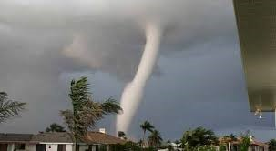

1.1 Cambio Climático en el Mundo
El cambio climático es un desafío global que provoca fenómenos como el Fenómeno del Niño, huracanes e inundaciones.
- Fenómeno del Niño
- Los Huracanes
- Las Inundaciones

El Fenómeno del Niño es un fenómeno climático que causa alteraciones en el clima global, generando sequías e inundaciones en diversas regiones.
Los huracanes se han intensificado debido al cambio climático, afectando la seguridad de muchas comunidades costeras.
Las inundaciones son un resultado directo del aumento en la frecuencia de lluvias extremas, especialmente durante el fenómeno del Niño.
Políticas del Gobierno en Zonas de Desastres Naturales
| País | Implementación | Imagen del Desastre |
|---|---|---|
| Perú | Los huaicos de Chosica en todos los años, el gobierno propuso un plan de prevención según la ley N.29664. | |
| Japón | Después del tsunami de 2011, Japón mejoró su infraestructura y sistemas de alerta. | |
| Estados Unidos | FEMA coordina la respuesta a desastres naturales,promoviendo la educación y planificación. |  |
| Chile | Programas educativos sobre prevención de terremotos y tsunamis en escuelas y comunidades. | |
| Indonesia | Sistema de alertas para tsunamis que notifica a la población en minutos tras un terremoto. |
1.2 Turismo en Perú
Perú es un país muy diverso, que encanta a todos los viajeros que vienen a explorar el destino. Así que hay muchos lugares turísticos que puedes disfrutar en Perú y tener una experiencia mágica. Pero Tambié enfrenta desastres naturales.
Zonas Seguras para el Turismo
- Iquitos: Destacada por su rica cultura y excursiones para explorar la selva .
- Lima:Conocida por su gastronomía, patrimonio cultural y es conocida por su gastronomía.
- Machu Picchu: Un sitio arqueológico, una de las Maravillas del mundo que atrae a millones de turistas cada año.
- Nazca:Famosa por sus lineas,enormes geoglificos en el desierto..
Recursos de Exportación y su Desarrollo
El Perú es conocido por sus exportaciones de productos como el café, la palta, el pescado, frutas, Cacao y etc a nivel internacional. Ademas,la inversión en infraestructura, productos y en minería (cobre,oro,zinc) ha crecido, pero también hay preocupaciones sobre sostenibilidad y derechos de las comunidades locales. El libre comercio han facilitado el acceso a mercados globales fomentando asi mas a la inversión en el Perú.